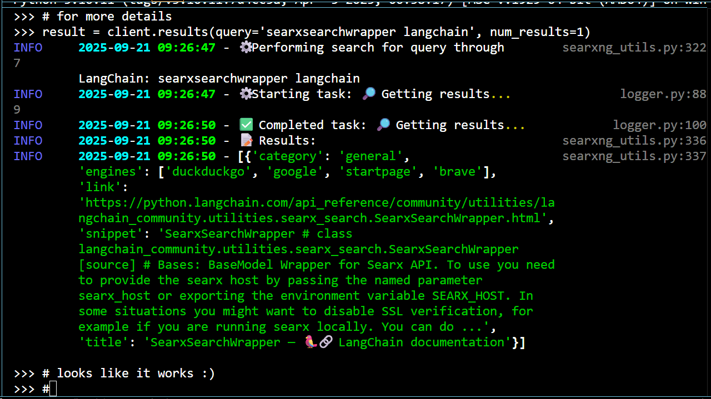
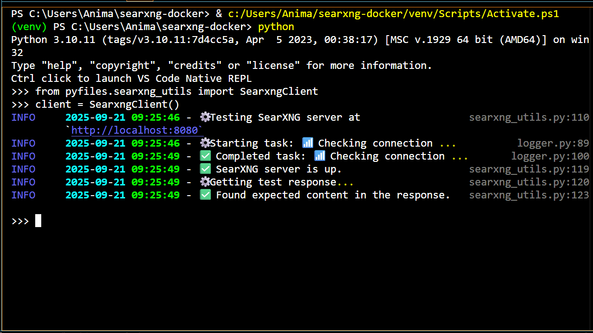

SearXNG with Docker and LangChain⚓︎



TL;DR
Learn how to build and use a metasearch engine on your local machine . Then, you can use this setup as a tool to give to locally run AI agents .
About This Project⚓︎
In this tutorial, we're going to setup a local SearXNG server in Docker for using the metasearch engine on our local machines . Once setup, the engine can be used in a web browser by navigating to http://localhost:8080. We're also going to see how to use our server to get web search results with the LangChain library.
The code we learn and use here will serve as the foundation for an indispensable tool to give to our agents , allowing them to obtain unfamiliar or up to date information . For a general overview of what we're going to do with these agents, checkout the next series of tutorials.
As previously mentioned, the way we're going to build agents is by first building local servers for all the gadgets that our agents will need . Then, we can learn how to pass these gadgets over to our agents with LangChain and LangGraph.
The first tutorial of the series covered how to setup a local Ollama server in Docker to chat with LMs . This tutorial is structurally the same. We'll learn how to setup and use the provided Python code, built on the Requests and LangChain libraries, to interact with the server . Then, we'll dive into the code to see how it all works .
When I first realized that SearXNG existed and that a local server could be bridged to an agent with LangChain and LangGraph, my body immediately started trying to figure out how to make it work before I realized what I was doing .
SearXNG doesn't collect my data , I can run it on my local machine , and it can be setup and used right away without knowing any of the details of how it works . Also, all the code is right there in full view so I can try to understand all the details, if I want . After setting up, I can even use it through a web browser, so I can see that it works right away without any extra code .
The SearXNG server will also utilize a Caddy server for a reverse proxy and a Valkey server (acting through the Redis API) for storage. I won't go into the details of this part of the setup, though I tried to add extensive documentation to the code as a result of me trying to understand what it was doing a bit better .
If you don't want to host a local server on your machine and you just want to give your agent a web search tool real quick with no fuss , a good alternative is the DuckDuckGo search tool that's built into Langchain. If you don't care about having a free, but limited monthly quota or paying for search usage, the Tavily search tool for LangChain was promising as well .
For a refresher on how to use Docker to build an LM server that can power the decision making and response generating aspects of our agents, check out the Ollama server tutorial. For an idea of what types of agents we'll build with our servers, check out the agents tutorials.
Finally, before you start building you can also check out the original repo on which our Docker setup is based .
Now, let's get building !
Getting Started⚓︎
First, we're going to setup and build the repo to make sure that it works . Then, we can play around with the code and learn more about it .
Check out all the source code here .
Toggle for visual instructions
This is currently under construction.
To setup and build the repo follow these steps:
- Make sure Docker is installed and running.
-
Clone the repo, head there, then create a Python environment:
-
Activate the Python environment:
-
Install the necessary Python libraries and create the
.envfile: -
Generate a new secret key (see the README instructions of the searxng-docker repo for similar methods):
This generates a secret key to replace the
SEARXNG_SECRETin the.envfile. If you don't change the secret key, it'll be set to its default:ultrasecretkey.If you run the server with the secret key set to its default, you should get an error like so:
ERROR:searx.webapp: server.secret_key is not changed. Please use something else instead of ultrasecretkey. -
Build and start all the Docker containers:
All server data will be located in Docker volumes (caddy-data, caddy-config, searxng-data, and valkey-data).
-
Head to http://localhost:8080/ to start searching with a web browser.
-
Run the test script to ensure the SearXNG server can be reached through the Requests and LangChain libraries:
All logs from the test script are output in the console and stored in the
./searxng-docker.logfile. -
When you're done, stop the Docker containers and cleanup with:
Example Use Cases⚓︎
Now that the repo is built and working, let's play around with the code a bit .
After setting up your SearXNG server, you can now search the web through a web browser or through the provided Python methods.
When we first built our Ollama server to power our agents, we demonstrated that the server could be reached and properly invoked by using the provided code built on the Ollama Python library. To chat with an LM, we first instantiated an instance of our OllamaClient class and used the get_response method to get LM responses for different LMs and messages . We did this by executing commands in the command line and by running scripts .
This time, we'll also instantiate a main class, but we'll have different methods to choose from depending on the type of results we want . The class we'll use is the SearxngClient class of the searxng_utils.py file which is built on the Requests and LangChain libraries. Once this class is initialized, there are two potential methods to get search results, each from LangChain's SearxSearchWrapper: run, and results 1.
The run method gives a single result which is a summary of all the aggregated results while the results method gives a list of results with more details . We still don't have a nice web UI setup that facilitates easier interactions with our servers so let's keep using the command line and Python scripts .
To start off, let's do a web search through the command line .
Searxng the Web through the Command Line⚓︎
Toggle for visual instructions
This is currently under construction.
To do a web search, follow these steps:
-
Do step 3 then step 6 of the
Getting Startedsection to activate the Python environment and run all the Docker containers to start the SearXNG server. -
Call the Python environment to the command line:
-
Now that you're in the Python environment, import the SearxngClient class:
-
Initialize the SearxngClient class:
-
Define your query:
-
Get results:
-
Repeat step 5 and step 6 any number of times for different queries.
-
Do step 9 of the
Getting Startedsection to stop the containers when you're done.
Just like with the test script, all logs will be printed in the console and stored in ./searxng-docker.log. The run method can also be executed with the default query Python programming by running the method with no variables: client.run().
Now that we know how to use the run method to get a summary of results , let's use the results method to get more details .
In the next example, I show how to do this by creating and running a custom script to get a list of results for a query .
Searxng the Web through Running Scripts⚓︎
Toggle for visual instructions
This is currently under construction.
To do a web search, follow these steps:
-
Do step 3 then step 6 of the
Getting Startedsection to activate the Python environment and run the SearXNG server in Docker. -
Create a script in the
./scriptsfolder namedmy_web_searx_ex.pywith the following:# Import SearXNGClient class from pyfiles.searxng_utils import SearxngClient # Initialize client client = SearxngClient() # Define number of results and search query # Change these variables to get a different number of search results # or to get results for a different search query num_results = 3 query = 'SearxSearchWrapper LangChain' # Get response client.results(num_results=num_results, query=query) -
Run the script
-
Do step 9 of the
Getting Startedsection to stop the containers when you're done.
Again, all logs will be printed in the console and stored in ./searxng-docker.log. The name of the Python script doesn't matter as long as you use the same name in step 2 and step 3.
Now, you have the tools to edit the script (or create an entirely new script) to get any query results you like . For more structured queries, you can loop through getting a different number of results for different queries with something like the following:
# Define list of number of results
num_results_list = [3,2,1]
# Define queries to search for
queries = [
'prominent factors evolution humans',
'mathematical symbol PI',
'weather My-Location'
]
# Get response for each (num_results, query) pair
for num_results, query in zip(num_results_list, queries):
client.results(num_results=num_results, query=query)
If you followed along in the last tutorial where we built an Ollama server to chat with an LM, you may remember that the LM couldn't give a good answer for the last query , because its static knowledge only goes up to some fixed point in the past. We can now use the metasearch engine tool to get appropriate answers for queries that need up to date information .
To make sure our agents can utilize this up to date information, all we need to do to is combine the Ollama and SearXNG servers and port everything to an our agents with LangChain and LangGraph. This is exactly what we'll do in future tutorials when we build our agents and give them tools .
Now that we understand how to use the code, let's open it up to check out the gears .
Project Structure⚓︎
Before we take a deep dive into the source code , let's look at the repo structure to see what code we'll want to learn .
├── Caddyfile # Caddy reverse proxy configuration
├── docker-compose.yml # Docker configurations
├── pyfiles/ # Python source code
│ └── logger.py # Python logger for tracking progress
│ └── searxng_utils.py # Python methods to use SearXNG server
├── requirements.txt # Required Python libraries for main app
├── requirements-dev.txt # Required Python libraries for development
├── searxng/ # SearXNG configuration directory
│ └── limiter.toml # Bot protection and rate limiting settings
│ └── settings.yml # Further custom SearXNG settings
├── scripts/ # Example scripts to use Python methods
│ └── latency_test.py # Timing tests for methods
│ └── searxng_test.py # Python test of methods
├── tests/ # Testing suite
├── third-party/ # searxng-docker licensing
└── .env.example # Custom SearXNG environment variables
third-party/
This directory contains the necessary licensing information for the original repo on which our Docker setup is based. Since the original repo is licensed as AGPL3, my repo is also licensed the same.
docker-compose.yml
Recall that we used a
docker-composefile in the first tutorial to tell Docker how we wanted the Ollama server to be built . We'll also use adocker-composefile here to define how we want to build our SearXNG, Caddy, and Valkey/Redis servers. We'll spend a little bit of time on this one to further our understanding of how to use Docker .
.env.example
This is the template for creating the
.envfile that we used in step 4 of theGetting Startedsection for setting theSEARXNG_SECRET. This file can also be used if you want to change how the SearXNG server is hosted (rather than through the localhost network) .
Caddyfile
The Caddyfile is a special file to tell Docker how to build the Caddy server. I won't go into this file in detail, but I did try to include detailed comments in my attempts to understand how it works . This file is the exact same as the original file that it's based on, just with more comments and proper attribution .
searxng/
The
searxng/directory contains special files to take care of extra settings for our SearXNG server . I also won't go into these files in detail, but I did try to add detailed comments to help my understanding .The
limiter.tomlfile, for rate limiting and bot protection, is exactly the same as in the searxng-docker repo, just with some extra comments and proper attribution .The
settings.ymlfile is also very similar to the original file, except I removed thesecret_keyvariable and moved this setup to the.env.examplefile instead . I also added an extrajsonformat to the search results in order to use the SearXNG server with LangChain's SearxSearchWrapper.
searxng_utils.py
Finally, the
searxng_utils.pydefines the class and methods needed in order to get web search results from our SearXNG server . We're going to spend much of our deep dive on this one .
How do all the files work?
If you followed the previous tutorial, you should be familar with the logger.py, requirements*.txt, latency_test.py, and searxng_test.py files as well as the tests/ folder.
Here, we also use the logger.py file to produce informative and visually appealing interactions, and the requirements.txt file to install all the necessary Python libraries (see step 4 of the Getting Started section). Similarly, the requirements-dev.txt file can be used to install the necessary libraries for development .
We use the latency_test.py file to check how quickly our methods are working , and just like in the Ollama server tutorial, the searxng_test.py file basically does what we did when running the script in the Example Use Cases section. This is the script that we ran in step 6 of the Getting Started section to test that our Python methods were working.
The tests/ folder also contains unit and integration tests for ensuring the code works properly . To see how to use the testing suite, check out the best practices note in the Ollama server tutorial.
Ok, that's all the files . Let's go diving !
Code Deep Dive⚓︎
Here, we're going to look at the relevant files in more detail . We're going to start with looking at the full files to see which parts of the code we'll want to learn, then we can further probe each of the important pieces to see how they work .
File 1 | searxng_utils.py⚓︎
Above, I show the searxng_utils.py file in all its full glory as well as in a skeleton version which is all the code needed to work and almost none of the code for some crucial best practices.
Similarly to the ollama_utils.py file in the Ollama server tutorial, we have both internal methods and external methods. The methods of the class that we're going to use are the run and results methods (exactly what we used when working in the command line and running scripts in the Example Use Cases section). The two methods are almost exactly identical, but the results method takes in an extra argument.
Let's check these methods out .
Methods 1.1 | run and results⚓︎
- See lines 77-85 and lines 89-99 of
searxng_utils.py
We've already seen that the run and results methods can take in a query, then output some search results. The run method ouputs a summary of all the aggregated results while the results method outputs a list of detailed results based on the num_results argument . Now, we can open up the methods to see how this is all done .
Here, we see that we're using the run and results method of our client attribute to get results (see lines 11-13 of the run method and lines 15-18 of the results method). All we need to do now is understand how the client attribute works (see line 29 of the searxng_utils.py file) .
Let's look at how we define the client attribute of the class more closely .
Method 1.2 | __init__⚓︎
- See lines 20-29 of
searxng_utils.py
This method instantiates the LangChain SearxSearchWrapper which has the run and results methods that we saw above already built in. All we need to do is properly point to the SearXNG server that we created with Docker.
| __init__ method of searxng_utils.py | |
|---|---|
So, we can just invoke the client.run and client.results methods to create our own run (lines 77-85) and results (lines 89-99) methods . It really is just this easy when other people do all the work for you. We can just wrap up their code to be used in our custom setting .
Wasn't there another argument in the __init__ method?
Yep . In the full version of searxng_utils.py, the __init__ method has an extra client argument. I added this here to allow the user to define their own SearxSearchWrapper with any arguments that they'd like .
It's also helpful to define the class this way when testing the code without access to the SearXNG server . In this case, we want to mock the server and we can easily pass this mock through the client attribute .
Now, it's generally good practice to make sure the SearXNG server can be reached as soon as we instantiate our class, otherwise the user might get a surprise error when trying to get search results . This is exactly what we're doing when we use the _test_searxng method on line 13.
Let's look at how we test the SearXNG server more closely .
Method 1.3 | _test_searxng⚓︎
- See lines 33-56 of
searxng_utils.py
This method ensures the SearXNG server can be properly reached and exits the program with an error if it can't .
| _test_searxng method of searxng_utils.py | |
|---|---|
Here, we loop through five consecutive tries of getting a successful response from the server using the Requests library (lines 12-15). If the status code is a success (i.e. 200), we exit the method successfully and move on to defining our client attribute (line 16 of the __init__ method). If the status code isn't a success, we wait for a bit (lines 24-25), then try again until the fifth try. If we still don't get a success, we exit the program with an error (line 28) . This way, the user will know up front that there's going to be problems getting search results .
This retry mechanism works for server errors in which the server is available for requests, but it somehow isn't able to perform the request properly (like the website doesn't exist or it's taking too long to reply) . However, if we have more serious issues like we can't even connect to the server , we want to let the user know this immediately without going through the whole retry logic (lines 20-21) .
How does the requests_search method work?
The requests_search method (lines 60-73 of searxng_utils.py) uses the Requests library to get the entire HTML output of the search request . Results are also obtained this way in LangChain's SearxSearchWrapper (see the _searx_api_query method and how it's used in the run and results methods), but with a lot of extra formatting, error handling, and cleaning to promote more useful results . Might as well stand on the shoulders of giants and utilize the work that's been gifted to us . However, I wanted to add this method for learning purposes .
| requests_search method of searxng_utils.py | |
|---|---|
Here, we're formatting the query to work properly with the Requests library on line 12, then we're using the GET method to get our results from the SearXNG server URL defined in our Docker setup (lines 15-19). Finally, we return the text attribute of the result (line 20) .
As an aside, when playing around with the Requests library I learned that you can feed this params dictionary basically any Python object as the query and Requests will use Python's urllib to parse it into a URL encoded string. By adding a query validation in the requests_search method, the user now knows exactly what they can pass to the method (see lines 181-185 of the full version of the searxng_utils.py file) .
And that's it ! Those are all the methods that we need to dig through in order to understand how to get web search results from our SearXNG server using the Requets and LangChain libraries.
Now, how about creating the SearXNG server that we'll be pointing to in order to get results ?
File 2 | docker-compose.yml⚓︎
Toggle file visibility
| docker-compose.yml (original file: https://github.com/searxng/searxng-docker/blob/master/docker-compose.yaml) | |
|---|---|
Recall from the first tutorial that we used Docker compose files to tell Docker how to create our Ollama server. This time we want three containers: a SearXNG server, a Caddy server, and a Valkey server ported through the Redis API.
Similarly to how we defined the Ollama container under the services section in the Ollama server tutorial, we'll define all the services that we need under this section . We'll also define the Docker volumes to store all of our data and the Docker network so that our containers can communicate with each other . We're also going to add in healthchecks for all our containers to periodically make sure that they can be properly reached .
In the snippet below, I show how to define the SearXNG service as well as the volumes and networks .
You can access the original file that the following snippet is based on here and here. You can also access the modified file here.
| docker-compose.yml piece (original file: https://github.com/searxng/searxng-docker/blob/master/docker-compose.yaml) | |
|---|---|
The SearXNG container (lines 9-34) is defined similarly to how we defined our Ollama container with the image, name, volume, and port that we want to use. In this case, we want to interact with the server by using our localhost network to send requests to port 8080 (the designated port that's chosen by default in the searxng-docker repo) 2. This is where we point when we initialize the SearxngClient class of the searxng_utils.py file and the URL that we pass to LangChain's SearxSearchWrapper .
Now, there are some new techniques here that we didn't use when building the Ollama server . First, when we set up our Ollama server we didn't need it to interact with any other servers in our Docker network . However, here we need our SearXNG and Redis containers to talk to each other, so we define a proper network for container communication .
We also definitely need our Caddy and SearXNG services to communicate with each other , but they do so in a different way . Since we set the network_mode to host for our Caddy service (see line 38 of the full Docker compose file), it's directly ported to our localhost network and so the service can communicate with SearXNG directly through the URL we set: http://localhost:8080 .
Besides the network, we also want to define Docker volumes to handle all of our configuration and data storage. In the code snippet, we can see how the Docker network (lines 37-38) and volumes (lines 41-45) are defined with ease, while the SearXNG service is defined to use the proper volume and network (lines 15 and 20). The other volume definition on line 19 tells Docker where to find all of our SearXNG settings in the ./searxng folder .
Next, notice that we added some environment variables to the SearXNG server definition (lines 21-25). These are using the variables defined in the .env file to define the base URL and secret key . If these aren't defined, the base URL for the server will be localhost to use the localhost network and the secret key will be ultrasecretkey (which will cause an error and a failed server build because the secret key can't be set to this default value) .
Finally, we've added a healtcheck for the SearXNG server (lines 26-34) . This periodically checks that the SearXNG server can be reached at the designated healthcheck endpoint using a wget request. However, we just want to check that the server endpoint exists and so we add the --spider argument to make a HEAD request.
We designate a time at which to start this healtcheck (30s after the server starts) and the time interval at which we should repeat this healthcheck (every 10s) . We also designate how long to wait for a response before considering the test as failed (the timeout time here is set to 5s) and how many times to repeat the test after failing before the container is deemed unhealthy (retry 3 times) .
In our case, when the server is deemed unhealthy , it will restart because of the restart argument that we added on line 13 which tells Docker to try to restart the server unless it's manually stopped by the user .
That's it ! We've gone through all the code in this repo that's needed to understand how to setup a SearXNG server in Docker and use it to search the web with the Requests and LangChain libraries .
Next Steps & Learning Resources⚓︎
There are two more tutorials in the servers series: one which shows how to build a Milvus server in order to store and query custom data; and the other to show how to combine all the servers covered in the series. This last tutorial will show how to build the complete server stack that we'll use for our specialized agent builds.
Continue learning how to build the rest of the servers by following along with another tutorial in the servers series or learn how pass this SearXNG server to an agent and interact with it through a Gradio web UI in the code agent tutorial. You can also checkout other agent builds in the rest of the agents tutorials.
Just like all the other tutorials, all the source code is available so you can plug and play any of tutorial code right away .
Contributing⚓︎
This tutorial is a work in progress. If you'd like to suggest or add improvements , fix bugs or typos , ask questions to clarify , or discuss your understanding , feel free to contribute through participating in the site discussions! Check out the contributing guidelines to get started.
-
There's also one other method, but it basically does what the LangChain methods do without all the nice cleaning up to facilitate ease of use. This method, the
requests_searchmethod, will output the entire HTML content of the resulting site, which is great for learning purposes , but the LangChain methods have done all the cleaning up for us . You can check out therequests_searchbonus code to see how this method works. ↩ -
From what I can tell,
8080is largely abritrary but does have some significance behind it. I think the story goes something like this: Port80is the standard port for HTTP, but any port value less than 1024 will typically be designated for root users and I don't want my server to have those kinds of privileges. I could tack a couple of zeros on there and use port 8000, but I see this is widely used for some other, official services. Maybe just tack an 80 on there instead? Sure, looks good. Port8080it is . ↩